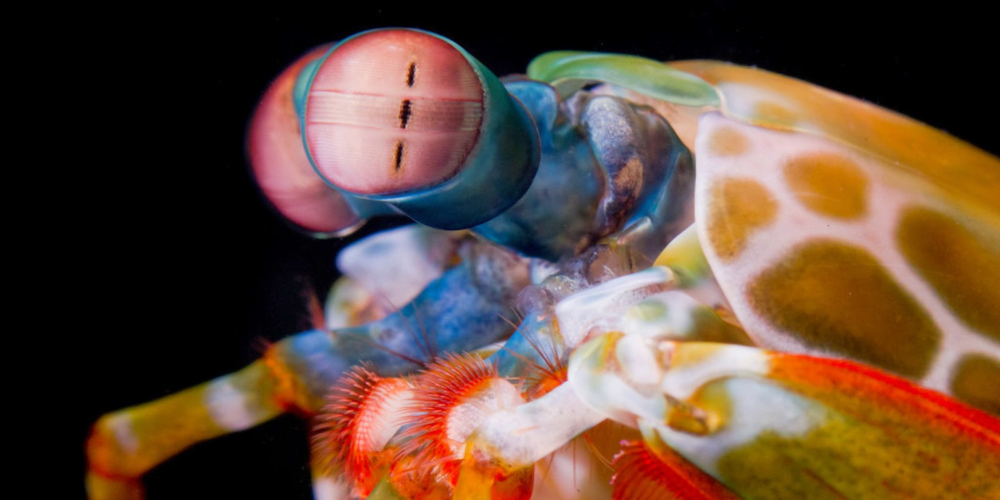

Fatos sobre a Stomatopoda
Uma linda invertebrada
Stomatopoda é uma ordem de crustácios marinhos que conta com mais de 400 espécies. Esses invertebrados, cujo nome ciêntifico é Odontodactylus scyllarus, são conhecidos por diversos nomes populares como lagosta-boxeadora, camarão mantis, camarão-louva-a-deus-palhaço, lacraia-do-mar, tamarutaca, dentre outros. Parentes distantes do camarão e da lagosta, esse animal lindo e colorido, na verdade não é nada amigável, sendo considerado um dos animais mais poderosos do mundo. O motivo disto você saberá logo a baixo, mas antes contemple mais um pouco da sua beleza.


| Classificação Ciêntifica | |
|---|---|
| Reino | Animalia |
| Filo | Arthropoda |
| Subfilo | Crustacea |
| Classe | Malacostraca |
| Subclasse | Hoplocarida |
| Ordem | Stomatopoda |
Nativa do Indo-Pacífico, as Stomatopodas podem ser encontradas em quase todo o litoral brasileiro, embora sejam difíceis de serem observadas devido à seus hábitos furtivos. Seu tamanho varia, podendo a chegar a 40cm de comprimento em suas maiores espécies.
Soco poderosíssimo

Para se alimentar e se defender, as Stomatopodas são capazes de desferir um dos mais rápidos e violentos socos do reino animal. Seu fantástico golpe se compara a uma arma de calibre .22, chegando a 80km/h. A água ao seu redor chega a ferver com o movimento, no que chamamos de calefação. Para fins comparativos, se um humano lançasse uma bola de baseball com a mesma intensidade, ela chegaria à órbita terrestre. Com esse ataque ela consegue quebrar facilmente a carapaça de caranguejos, conchas calcificadas de gastrópodes e até mesmo vidros reforçados de aquários.
Força e Resistência

O soco dado por uma Stomatopoda possuí a força de impressionantes 60kg/cm². Tamanha intensidade, produz uma onda de choque capaz de matar a presa, mesmo que ela erre o golpe. Mais surpreendente do que seu ataque é a resistência do apêndice que o desfere, que virou objeto de estudo de pesquisadores da área de Ciência dos Materiais, que visam compreender e aplicar seu mecanismo no desenvolvimento de estruturas artificiais, que podem a vir beneficiar, por exemplo, superfícies de automóveis e aeronaves.
Super Visão
Como se não bastasse a poderosa pancada, uma de suas espécies, a Gonodactylus smithii, possui o mais complexo sistema de visão de cores já estudado. Ele proporciona às Stomatopodas uma super visão capaz de ver cores, do ultravioleta ao infravermelho, invisíveis a vários outros animais. Para se ter uma ideia, elas enxergam doze cores primárias, enquanto que nós humanos, enxergamos apenas três.
Aposto que após essas informações, você não esquecerá tão fácil desse animalzinho marinho, não é mesmo?